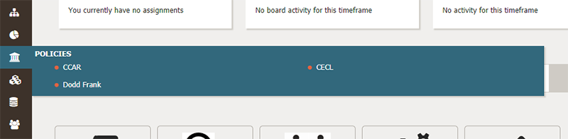
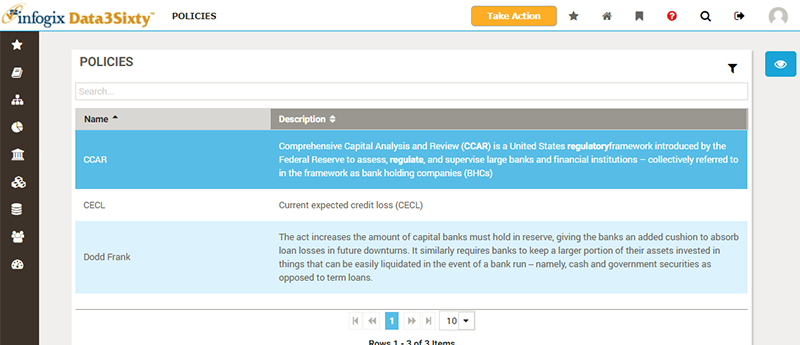
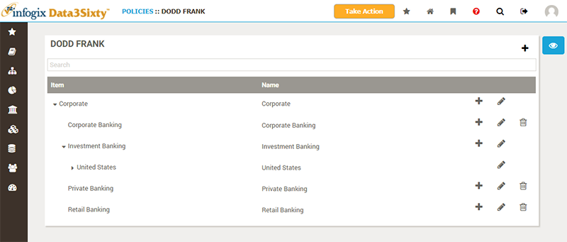
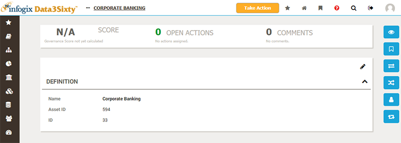

|
|
Browsing policies
Hover over the Policy button in the primary navigation to display a menu of the policies available to you:

As with artifact types, the policies available to you will differ from company to company. The following policies are commonly seen:
- Data protection regulation: GDPR
- Insurance regulation: HIPAA
- Financial regulation: BCBS239, CCAR, CECL, Dodd Frank
- Internal business policies: Departmental, Opioid Monitoring
You can click directly on the Policies button, in the navigation bar, to show a list of all available policies, together with descriptions:

Clicking on an policy from the Policies pop-up menu, or from the Policies page, will show the details of that chosen policy:

Tip: If you are browsing through a list of items, and open an item, you will notice that when you close the item you are returned to the beginning of the list. To keep your place in the list, you can right-click and open the item in a new window. Then, when you've finished viewing or editing the item, you can close the browser tab and return to the same place in your list. Please note, however, that if you are deleting items from a list, the page will not auto refresh if you have the list open in a different browser window.
Similar to models, policies are a collection of artifacts organized in a hierarchical structure. This makes it possible to organize policies into classifications. For example, you might organize policies by region: US Regulations, European Regulations and Internal Regulations.
Clicking on a policy asset will display the details for that asset:

Please see the topic Inspecting assets for an explanation of the common sections of the asset page.
You can use the Ownership and Relations buttons on the right to view and assign responsibilities and relationships to the policy asset from this page.